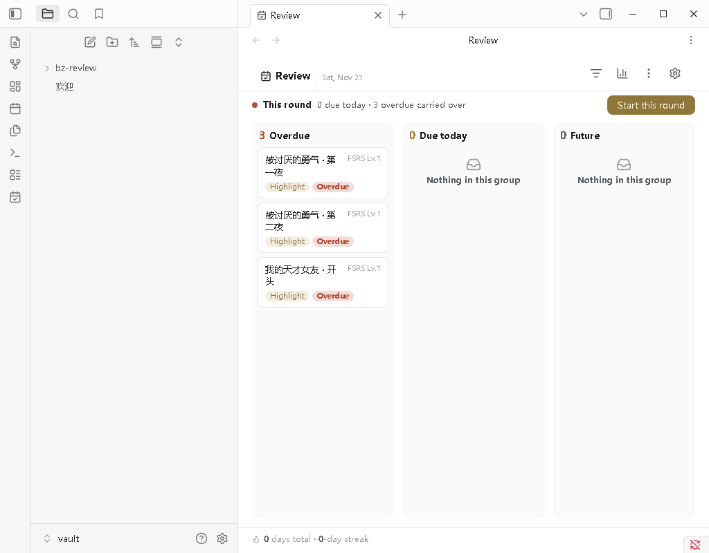
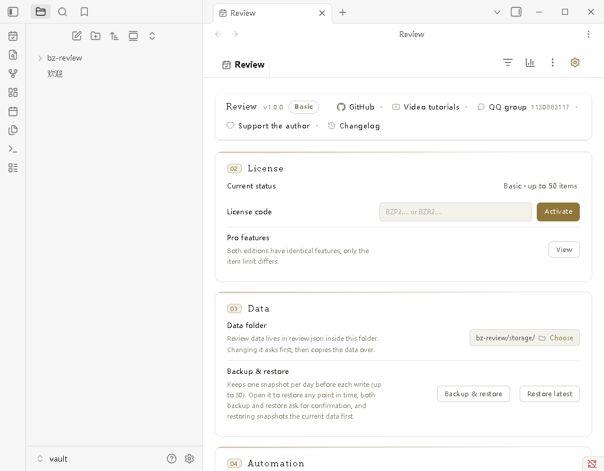
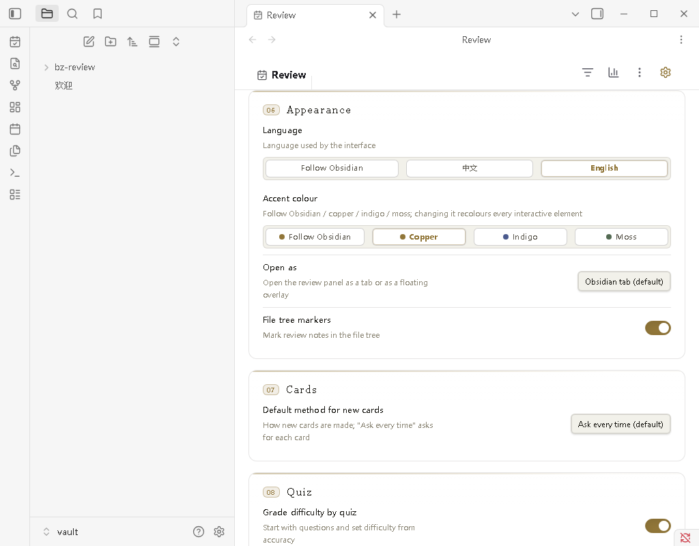
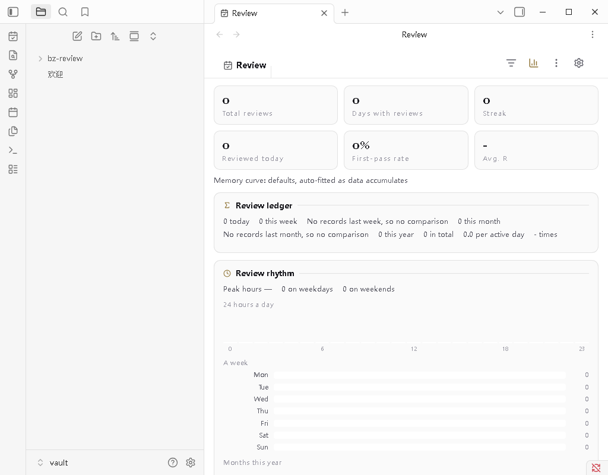
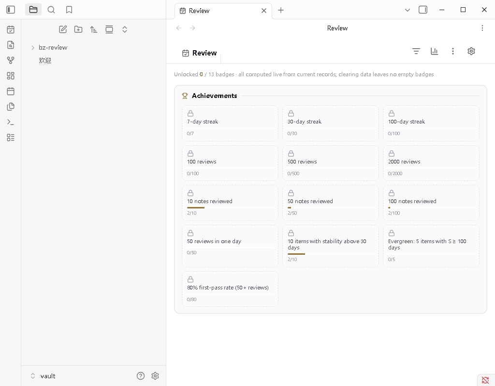
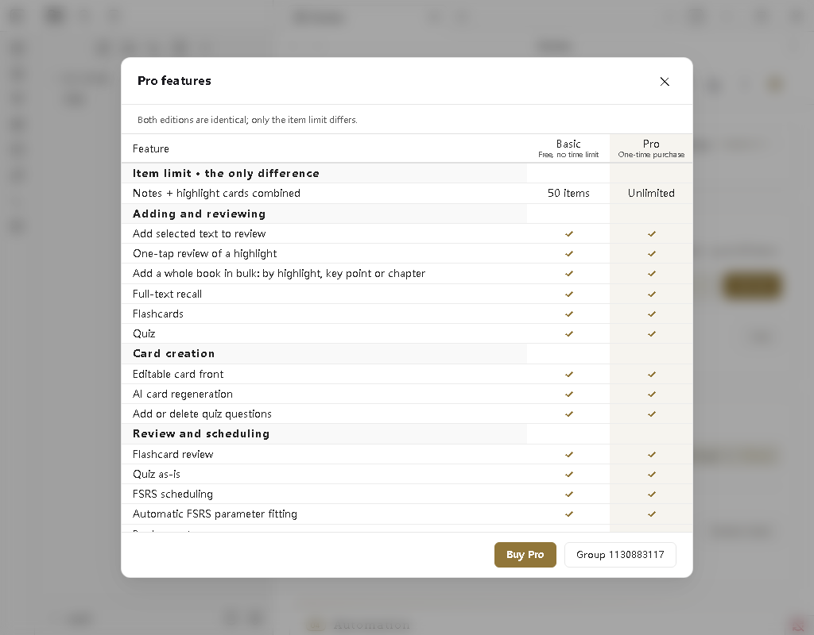
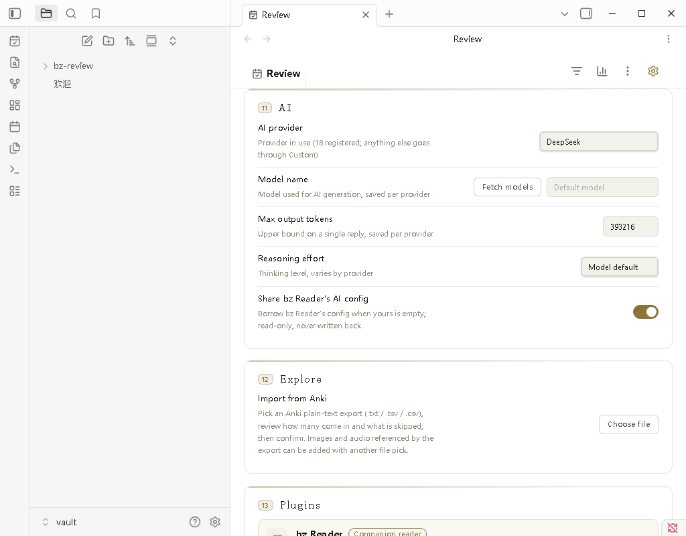
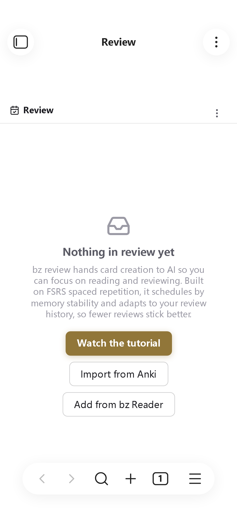
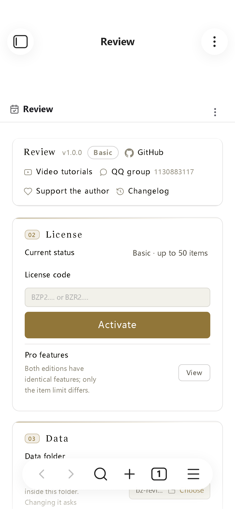

| 验证项 | 说明（一句话） | 证据 | 结论 |
|---|---|---|---|
| 语言包与切换机制 | 中文词表为基准，英文词表缺 key 会编译失败，不会漏词；语言选择支持「跟随系统 / 中文 / English」，读不到宿主语言时退回中文。 | 代码 + 设置页截图 | 通过 |
| 设置页全组英文 | 授权、数据、界面、复习节奏、卡片、做题、排期、算法、自动化、探索、AI 十一组全部英文，长说明自动换行不溢出。 | 授权与数据 · 界面 · 复习节奏 | 通过 |
| 语言开关 | 点选后设置页整页即时重开，主面板下次重绘生效；切换有提示，写明命令名需重启 Obsidian。 | 切英文瞬间 | 通过 |
| 主面板与空态 | 三列标题、底栏、空态与四颗入口按钮英文；移动端窄屏下按钮按列排布不挤压。 | 桌面 · 移动端 | 通过 |
| 复习卡与评级 | 退出、看答案、四档评级与提示、本轮按方式分布全部英文，评级名与统计/分析页同源。 | 复习卡 | 通过 |
| 更多菜单与批量操作 | 四组菜单标题与副标、批量条（已选数量、顺延、移出、取消）、二次确认框英文。 | 更多菜单 · 批量条 | 通过 |
| 回收站 | 空态、恢复与彻底删除、确认框英文。 | 回收站 | 通过 |
| 统计页 | 六张统计卡、记忆曲线状态、复习量对比、评级分布、到期负载、时间线、账本（含环比）、节律、连续与活跃、遗忘段、记忆状态、内容构成、排行全英文；星期与日期随语言变化。 | 统计页 | 通过 |
| 成就页 | 13 枚徽章的名称与说明、解锁计数、空态一行英文。 | 成就页 | 通过 |
| 解锁窗（基础版 / 高级版） | 对照表七组标题与全部条目、合计行、购买与交流群按钮英文；表尾「Group 1130883117」保留群号。 | 解锁窗 | 通过 |
| 制卡向导与源选择 | 选方式屏（名称、说明、预计字数）、确认题面、挖空编辑、补题与重生成、从阅读器挑内容全英文。 | 创建卡牌 | 通过 |
| AI 设置与密钥行 | 18 家服务商下拉名、密钥行标题与描述英文（中文界面仍是「DeepSeek 密钥」）；思考档位（Model default / Off / Low…）随语言。 | AI 组 · 下拉实测 Zhipu Plan / Ollama (local) / Zhipu GLM |
通过 |
| 通知与错误提示 | 未配 AI、未到复习时间、拟合成功、休假、无逾期、暂停/继续、超时、撤销、逾期常驻通知、激活码各类失败、备份与回滚、远程下载与解压错误全英文。 | 代码 + 真机 toast | 通过 |
| 导出文件 | CSV 表头与指标名、划线卡 Markdown（标题、导出于、想法、问答、回到原文）、按书报告随语言出词。 | 单测覆盖（739 项内） | 通过 |
| AI 生成内容语言 | 英文界面下三条出题提示词（按划线挑、按章节出卡、四选一）与挖空/抽认卡提示词改为英文，生成的题目与解析为英文；JSON 契约不变。 | 代码 + 单测 | 通过 |
| 中文界面无回归 | 中文词表即原文，切回中文后主面板、设置页、通知逐字与改动前一致；测试全绿。 | 主面板中文 · 设置页中文 | 通过 |
| 移动端布局 | iPhone 视口下空态与设置页长句自动换行，按钮不溢出、不截断。 | 移动端主面板 · 移动端设置页 | 通过 |
| 忆炉全景（十六幕） | 幕名、图例、指标与说明句已翻；但本版本没有注册命令或界面按钮，无法从界面进入，只做了构建与单测校验。 | — | 待确认 |









addCommand 只在插件加载时求值，切换语言后命令面板里的名字仍是旧语言；设置页提示与切换通知都写明了这一点。openReviewAnalysis 只是导出函数，本版本没有命令和按钮，用户点不到，因此未做真机截图。core/deps-*、setup-screen、rss-catalog、douban-name-index、category-table 在本插件零引用，未翻。| 批次 | 范围 |
|---|---|
| 1 | 语言包骨架、中英词表、设置页语言开关、命令 / 菜单 / 通知 / 支持作者 / 关于条 |
| 2 | 主面板、冲刺与结算、复习卡会话、卡片方式、按书档案、管理器、回收站、做题练习、评级名与日期 |
| 3 | 设置页十一组设置行与分组名 |
| 4 | 面板事件层 113 处 toast / 确认框 / 菜单 |
| 5 | 卡片向导 64 处 + 加入复习流程 27 处 |
| 6 | 从阅读器挑内容 53 处 |
| 7 | 统计页与成就页 |
| 8 | 解锁窗、备份回滚、媒体、模板、手动排期、预测负荷、牌组 |
| 9 | 复习应用通知、卡片编辑、制卡确认、导出、挂起与埋藏 |
| 10 | AI 错误与档位、Reader 安装器、按钮三态、模型选择 |
| 11 | 数据层：迁移、配额、授权状态、激活码 |
| 12 | 出题提示词、Anki 导入、做题面板 |
| 13 | 忆炉全景十六幕 |
| 14 | 监听文件夹、远程资源、手册、存储、相对时间 |
| 15 | 路径选择、流程弹窗、备份恢复、教程、支持作者、牌组筛选、Anki 卡片、冲刺 |
| 16 | 挖空/抽认卡提示词、制卡方式、命令提示 |
| 17 | zip / tar 解压错误、JEV 助手提示 |
| 18 | AI 服务商名与密钥行 |